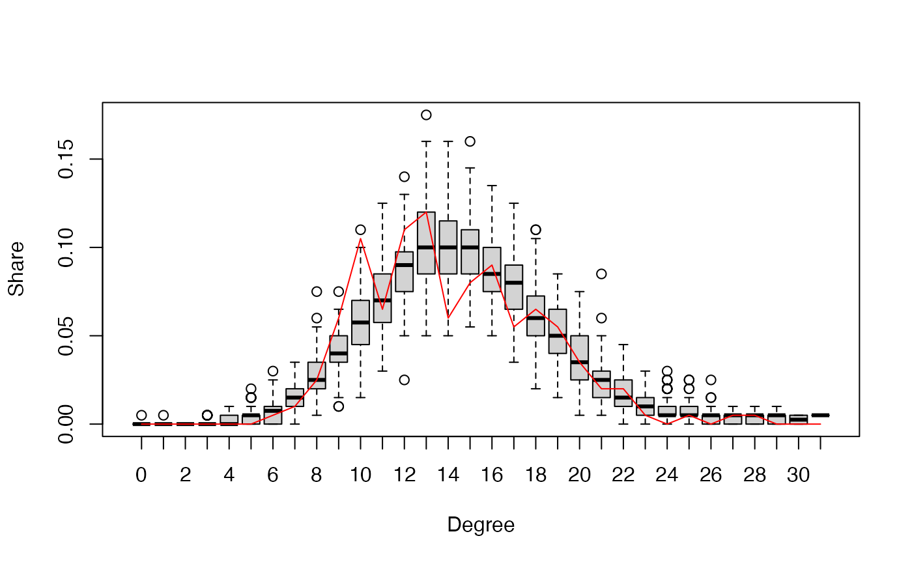
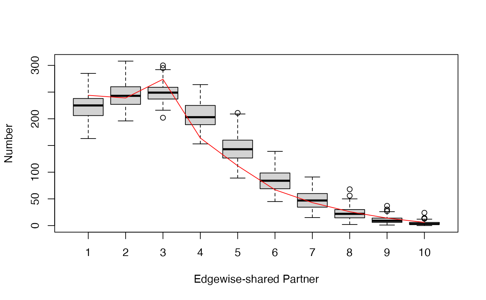
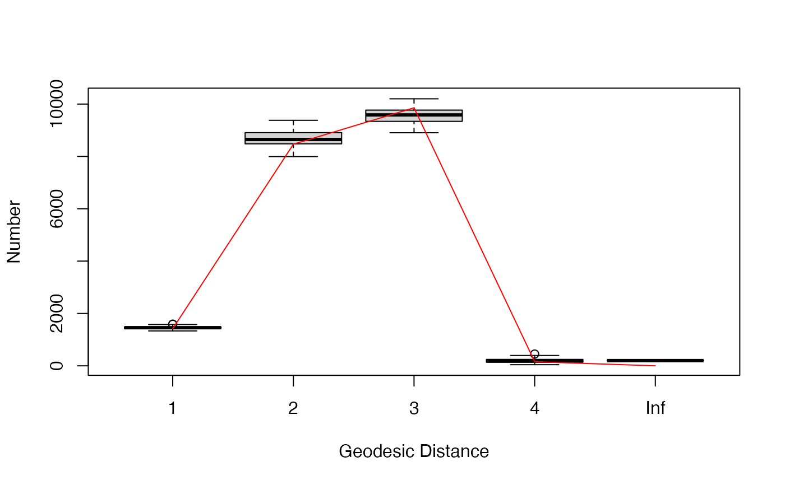

Conduct Goodness-of-Fit Diagnostics on a Exponential Family Random Graph Model for big networks
gof.bigergm.RdA sample of graphs is randomly drawn from the specified model. The first
argument is typically the output of a call to bigergm and the
model used for that call is the one fit.
By default, the sample consists of 100 simulated networks, but this sample
size (and many other settings) can be changed using the ergm_control
argument described above.
Usage
# S3 method for class 'bigergm'
gof(
object,
...,
type = "full",
control_within = ergm::control.simulate.formula(),
seed = NULL,
nsim = 100,
compute_geodesic_distance = TRUE,
start_from_observed = TRUE,
simulate_sbm = FALSE
)Arguments
- object
An
bigergmobject.- ...
Additional arguments, to be passed to
simulate_bigergm, which, in turn, passes the information tosimulate_formula. See documentation forbigergm.- type
the type of evaluation to perform. Can take the values
fullorwithin.fullperforms the evaluation on all edges, andwithinonly considers within-block edges.- control_within
MCMC parameters as an instance of
control.simulate.formulato be used for the within-block simulations.- seed
the seed to be passed to simulate_bigergm. If
NULL, a random seed is used.- nsim
the number of simulations to employ for calculating goodness of fit, default is 100.
- compute_geodesic_distance
if
TRUE, the distribution of geodesic distances is also computed (considerably increases computation time on large networks.FALSEby default.)- start_from_observed
if
TRUE, MCMC uses the observed network as a starting point. IfFALSE, MCMC starts from a random network.- simulate_sbm
if
TRUE, the between-block connections are simulated from the estimated stochastic block model from the first stage not the estimated ERGM.
Value
gof.bigergm returns a list with two entries.
The first entry 'original' is another list of the network stats, degree distribution, edgewise-shared partner distribution, and geodesic distance distribution (if compute_geodesic_distance = TRUE) of the observed network.
The second entry is called 'simulated' is also list compiling the network stats, degree distribution, edgewise-shared partner distribution, and geodesic distance distribution (if compute_geodesic_distance = TRUE) of all simulated networks.
Examples
data(toyNet)
# \donttest{
# Specify the model that you would like to estimate.
data(toyNet)
# Specify the model that you would like to estimate.
model_formula <- toyNet ~ edges + nodematch("x") + nodematch("y") + triangle
estimate <- bigergm(model_formula,n_blocks = 4)
gof_res <- gof(estimate,
nsim = 100
)
plot(gof_res)



# }